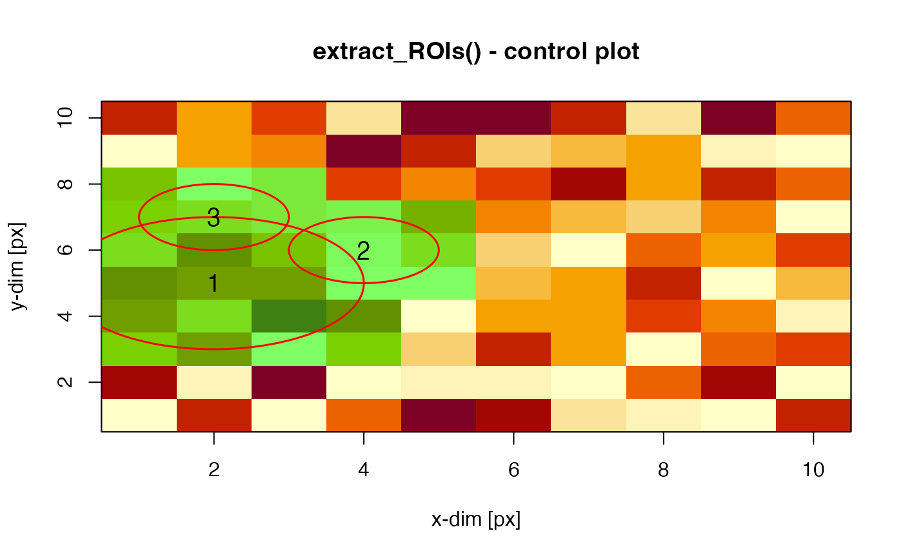

R/extract_ROI.R
extract_ROI.RdLight-weighted function to extract pixel values from pre-defined regions-of-interest (ROI) from RLum.Data.Image, array or matrix objects and provide simple image processing capacity. The function is limited to circular ROIs.
extract_ROI(object, roi, roi_summary = "mean", plot = FALSE)RLum.Data.Image, array or matrix (required): input image data
matrix (required): matrix with three columns containing the centre coordinates
of the ROI (first two columns) and the diameter of the circular ROI. All numbers must by of type integer
and will forcefully coerced into such numbers using as.integer() regardless.
(with default): if "mean" (the default) defines what is returned
in the element roi_summary; alternatively "mean", "median", "sd" or "sum" can be chosen.
Pixel values are conveniently summarised using the above defined keyword.
logical (optional): enables/disables control plot. Only the first image frame is shown
RLum.Results object with the following elements:
..$roi_signals: a named list with all ROI values and their coordinates
..$roi_summary: an matrix where rows are frames from the image, and columns are different ROI
The element has two attributes: summary (the method used to summarise pixels) and area (the pixel area)
..$roi_coord: a matrix that can be passed to plot_ROI
If plot = TRUE a control plot is returned.
The function uses a cheap approach to decide whether a pixel lies within a circle or not. It assumes that pixel coordinates are integer values and that a pixel centring within the circle is satisfied by:
$$x^2 + y^2 <= (d/2)^2$$
where \(x\) and \(y\) are integer pixel coordinates and \(d\) is the integer diameter of the circle in pixel.
0.1.0
Kreutzer, S., 2023. extract_ROI(): Extract Pixel Values through Circular Region-of-Interests (ROI) from an Image. Function version 0.1.0. In: Kreutzer, S., Burow, C., Dietze, M., Fuchs, M.C., Schmidt, C., Fischer, M., Friedrich, J., Mercier, N., Philippe, A., Riedesel, S., Autzen, M., Mittelstrass, D., Gray, H.J., Galharret, J., 2023. Luminescence: Comprehensive Luminescence Dating Data Analysis. R package version 0.9.21. https://CRAN.R-project.org/package=Luminescence
m <- matrix(runif(100,0,255), ncol = 10, nrow = 10)
roi <- matrix(c(2.,4,2,5,6,7,3,1,1), ncol = 3)
extract_ROI(object = m, roi = roi, plot = TRUE)

#>
#> [RLum.Results-class]
#> originator: extract_ROI()
#> data: 3
#> .. $roi_signals : list
#> .. $roi_summary : matrix
#> .. $roi_coord : matrix
#> additional info elements: 1